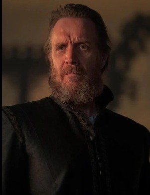

Núcleo Hightower
Otto Hightower
Retorna ao cargo de Mão do Rei após a morte de Lyonel.
Conteúdo até a temporada 1, episódio 10.
Ver Mapa de Conexões →HISTÓRICO DO PERSONAGEM
Temporada 1
Acompanhe os acontecimentos registrados até o episódio escolhido.
Episódio 01 — The Heirs of the Dragon
Mão do Rei e pai de Alicent. Defende os interesses da Coroa enquanto amplia a influência de sua casa.
Episódio 04 — King of the Narrow Sea
É destituído do cargo de Mão após a denúncia sobre Rhaenyra e Daemon.
Episódio 06 — The Princess and the Queen
Retorna ao cargo de Mão do Rei após a morte de Lyonel.
Episódio 09 — The Green Council
Alicent anuncia o que acredita ser a vontade de Viserys. Descobre que parte do conselho já planejava coroar Aegon. Criston mata Lorde Beesbury quando ele protesta.
Episódio 10 — The Black Queen
Otto apresenta condições de rendição. Rhaenyra evita uma resposta imediata e envia os filhos como emissários: Jacaerys ao norte e Lucerys a Ponta Tempestade.
Personagens relacionados
- Alicent HightowerFilha e pai
- Arryk CargyllBusca por Aegon
- Jasper WyldePequeno Conselho
- Hobert HightowerIrmãos